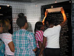

Urban Ed has a lot going on these days! Check out what's new. View our archives for past email updates. For press inquiries, please contact RWilliams@urbaned.org.
Urban Ed and Crown Castle team up during COVID-19 to make an impact!
D.C. residents most in need will find some solace through this meaningful IT Training Partnership (Apr 2020)
View the Press Release here for more details on what our partnership means during these unprecedented times.
Urban Ed's latest media spot!
Check out our latest videos. See them on TV as well! (Mar 2018)
Urban Ed named one of the Best Nonprofits in DC!
Urban Ed was selected by the Catalogue for Philanthropy as one of the best small nonprofits in DC. The Catalogue’s goal is to create visibility for the best community-based charities, fuel their growth with philanthropic dollars, and create a movement for social good in the greater Washington region. Urban Ed has been selected as one of the best in the DC region and will be put in front of high wealth individuals over the next four years. Check us out at CFP's website! (Nov 2017)
JP Morgan Chase Makes Significant Investment in Urban Ed!
As part of its global initiatives to help adults and young people acquire skills for well-paying jobs of the 21 st century, JPMorgan Chase & Co. has made a $150,000 investment in Urban Ed, Inc. This will support Urban Ed's multi-year plan to expand its training programs and create more IT career pathways for Washington, D.C.'s low-income residents, particularly in Ward 8. Check out the full story in our latest newsletter - What's New at Urban Ed-Jun2017! (Jun 2017)
Urban Ed's President featured in Working Woman Special!
Urban Ed was selected and featured by ABC7's Alison Starling in its long running Working Woman special that highlights the efforts of women from around the DC area doing outstanding work to support community. The featured aired in Februray 2017 and in case you missed it, check out the story in our latest newsletter - What's New at Urban Ed-Mar2017! (Feb 2017)
Missed the 2015 Anniversay event!
Check out our video capture of the amazing night of Limitless Possibilities. As always, we thank EnVision Productions for its relentless video production support of Urban Ed!
2014 Graduation and 14th Annual Even
A magical night for Urban Ed students and the success they achieved. We must always say thank you to EnVision Productions for its video production support of Urban Ed!
Urban Ed has a new video out!
Now you can see, hear and feel our impact. Check out our latest video and a special thank you to EnVision Productions for making it happen!
Urabn Ed's President receives Pioneer Award!
In Honor of Black History Month, Urban Ed's president along with two other recipients, received the 2013 Pioneer Award presented at the Verizon Center by the Washington Wizards and Amtrak on the evening of Wednesday, February 27th during half time. The Amtrak Pioneer Award was created to recognize African Americans within the Washington, D.C. metro area who, through resolve and perseverance, have positively impacted their community. Urban Ed was among this honor. If you missed the game click here for additional info and to view the live broadcast. (Feb 2013)
Urban Ed has been named a 2012 Computerworld Honors Laureate!
Urban Ed has been honored for our visionary applications of information technology to promote positive social, economic and educational change. We were selected from among 500 nominations from around the world for the training and education we provide. Established in 1988, The Computerworld Honors Program brings together men, women, organizations and institutions worldwide to recognize their achievements publicly. A special Honors Ceremony and Gala took place on Monday, June 4, 2012 at the Andrew W. Mellon Auditorium. During this black tie ceremony, Urban Ed was presented with a medallion inscribed with the program's mission, "A Search for New Heroes." All of us at Urban Ed are truly honored to have been selected among innovators from around the world! (Jun 2012)
Urban Ed featured on VerizonDC's Facebook!
Urban Ed was featured on VerizonDC's "We Like Wednesday" as part of Verizon READS literacy grants. (May 2012)
Urban Ed featured on WAMU Radio 88.5!
Urban Ed was featured for the entire month of February 2012 on WAMU's Community Minute. Check out the Recorded Broadcast here. (Feb 2012)
We are a part of the 2011 CFC!
Urban Ed was part of the 2011 Combined Federal Campaign. Federal employees interested in supporting children and youth, education and workforce development made pledges to Urban Ed throughout the campaign. Our CFC# is 34840!(Sep 2011)
Urban Ed's teens visited the Pentagon during our safe summer program!
Thanks to some special friends at the Pentagon our teens got a very private tour of the Pentagon getting a private briefing with the K-9 unit and the Chemical, Biological, Radiological, Nuclear & Explosives team. Our teens also got to stand on the steps where U.S. Presidents deliver their speeches. And the icing, Principal Deputy Director of the Pentagon, Jonathan Cofer stopped by during our briefing and engaged our youth. Very cool tour, very educational and our teens were truly inspired. Some even got applications to join the Pentagon forces! (July 2011)
|  | |||
Urban Ed featured on Channel 9 NewsNow!
In response to the success of our summer program and the redesign of our teen program, Urban Ed was featured on WUSA-TV Channel 9's "Friday's Heroes!" The story aired a feature on our Teen TechnoAcademy, along with our summer Lil' Bitties program. The broadcast was aired on Friday, July 23, 2010 at 5 p.m. (July 2010)
Our president hit a hole in one during the St. John's Golf Tournament!
Yes, a hole in one and she (yes she) has played golf only ONCE in her entire life and that was during a physical education (PE) class. An amazing shot with the ball sailing over water, this hole in one truly added a lot of excitement to the tournament and her team finished 2nd place! Urban Ed thanks the St. John Masons for bringing out nearly 75 people to sponsor this event and raise $5,000 for our mission. It was a great day, lots of fun and all for helping the children, youth and unemployed most in need in Anacostia DC! (May 2010)
We were selected as a Great Nonprofit!
Urban Ed was was selected as one of the top 10 nonprofit organizations in Job Training and Placement by Great Nonprofits. Click here to check out our ratings! (Feb 2010)
Urban Ed's annual report is now available!
Our 2008-2009 Annual Report is our first formal two-year report. This report is an excellent account of our success over the past several years. Click here to check us out! (Jan 2010)
Urban Ed receives major grant!
Urban Ed is one of only five recipients that have been granted funding by the Justice Grants Administration to be a part of a special city-wide initiative to help teens in need of supervision receive constructive and sustainable services. (Oct 2009)
Urban Ed has moved!
We are now located in the Anacostia Professional Building at 2041 Martin Luther King Jr. Ave, SE, Suite M-2, Washington, DC 20020. We now have more space to serve more members of the community including children. (Aug 2009)
We are a part of this year's CFC!
Urban Ed is part of the 2009 Combined Federal Campaign. Federal employees interested in supporting children and youth, education and workforce development, please make your pledge to us. Our CFC# is 34840!
Urban Ed awarded a grant for our Lil Bitties summer TechnoCamp!
We are a DC Department of Human Services/Income Maintenance Administration subgrantee for the summer 2009. Thanks to DHS/IMA for making the summer possible for DC's children and families!
Urban Ed goes into an elementary school!
In March 2009, Urban Ed launched its Lil Bitties TechnoAcademy in Leckie Elementary School using our creative technology approaches to help enrich children ages 5-7.
Urban Ed selected as Fair Chance Partner.
After surviving a rigorous application process, Urban Ed has been selected as a 2008 – 2009 partner organization of Fair Chance, a District of Columbia based technical assistance provider that has been working with organizations since 2002. Fair Chance partners with promising community-based nonprofits serving children, youth and families in Washington, D.C to improve their capacity and strengthen their sustainability, impact and success. We are excited to have the assistance of Fair Chance to help take Urban Ed to the next level of outcomes and effectiveness. Click here to learn more about Fair Chance.
Accomplishments
With a focused approached, Urban Ed continued to push the limits during 2008. Click here to see our ACCOMPLISHMENTS.
Early Events
Urban Ed held a Community Cookout as the start of our new strategic planning process. The event was held on Saturday, August 2, 2008 at Urban Ed. Focus groups and online surveys were conducted to help us begin to better assess the work we do and how we can improve as we look to the future.
Our 7th Annual Event last year had a more casual and intimate vibe. The event was held on Wednesday, May 2, 2007 at the beautiful home of Patrick Murphy of mCapitol Management. Patrick opened up his multiple story home located on Capitol Hill to help Urban Ed celebrate seven years of success in serving disadvantaged youth and families from throughout the city.
Special Recognition
Urban Ed was featured on FOX 5 MORNING NEWS as part of their Gimmie A Break series in February 2005!
Urban Ed was also featured in the DC Chamber of Commerce's EXCLUSIVELY WASHINGTON publication released in March 2004! Click here to see this outstanding profile.
Just in General
Urban Ed always needs Volunteers!
We are also seeking leadership for our corporate advisory committee
ARCHIVES- See Urban Ed's past email updates:
- Dec 2017 What's New at Urban Ed-Thank You!
- Nov 2017 What's New at Urban Ed-#GivingTuesday
- Sep 2017 What's New at Urban Ed-OSSE
- Aug 2017 What's New at Urban Ed-Lil Bitties
- June 2017 What's New at Urban Ed-JP Morgan Chase
- June 2017 What's New at Urban Ed-Catalogue for Philanthropy
- May 2017 What's New at Urban Ed-Success Story-DeSean Fisher
- Mar 2017 What's New at Urban Ed
- Feb 2017 What's New at Urban Ed
- Dec 2013 Lil Bitties Summer Success
- May 2013 Lil Bitties Update
- Mar 2013 Update
- Jan 2013 Update
- Dec 2012 Update
- Jun 2012 Update
- Feb 2012 Update
- Oct 2011 Update
- Summer 2011 Update
- May News 9 Feature Update
- July 2010 Update
- June 2010 Update
- March 2010 Update
- December 2009 Update
- September 2009 Update
- Individual Giving Campaign, April 2009
- Year End 2008 Newsletter
- Fall 2007 Newsletter
- Winter 2005 Newsletter